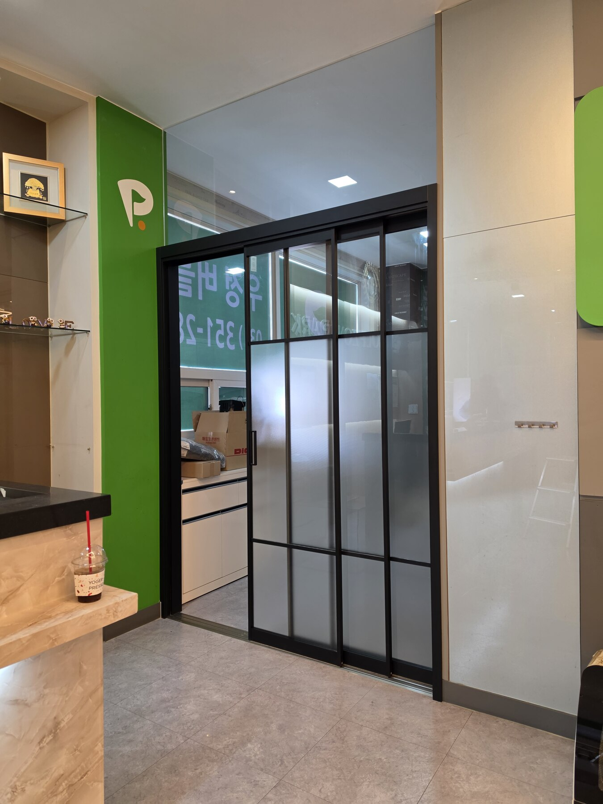
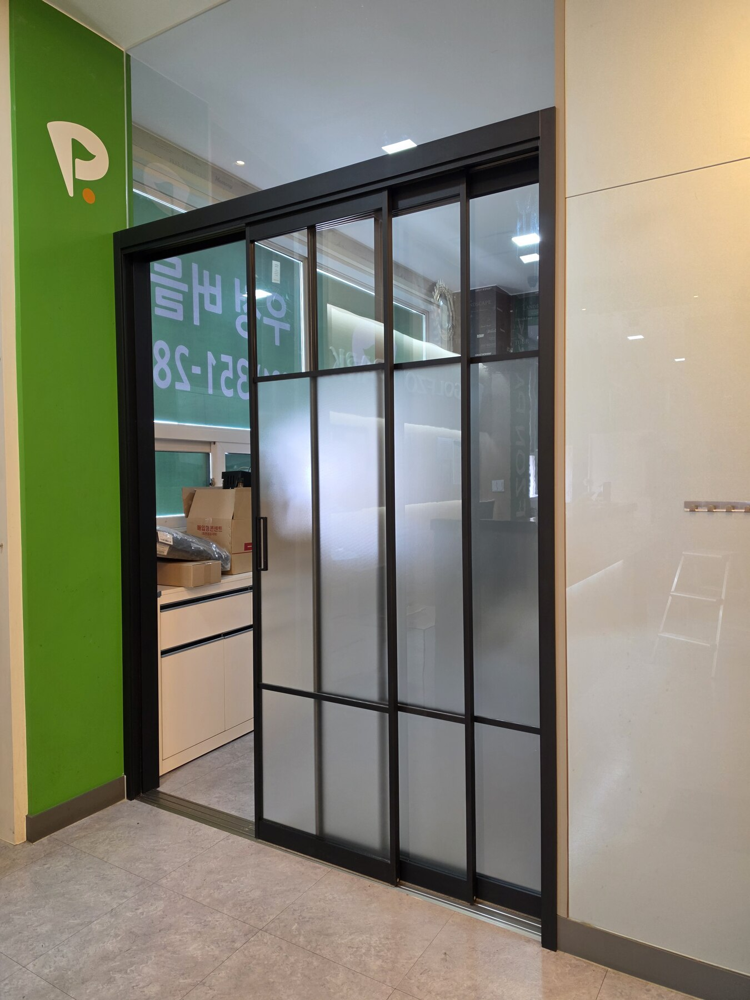
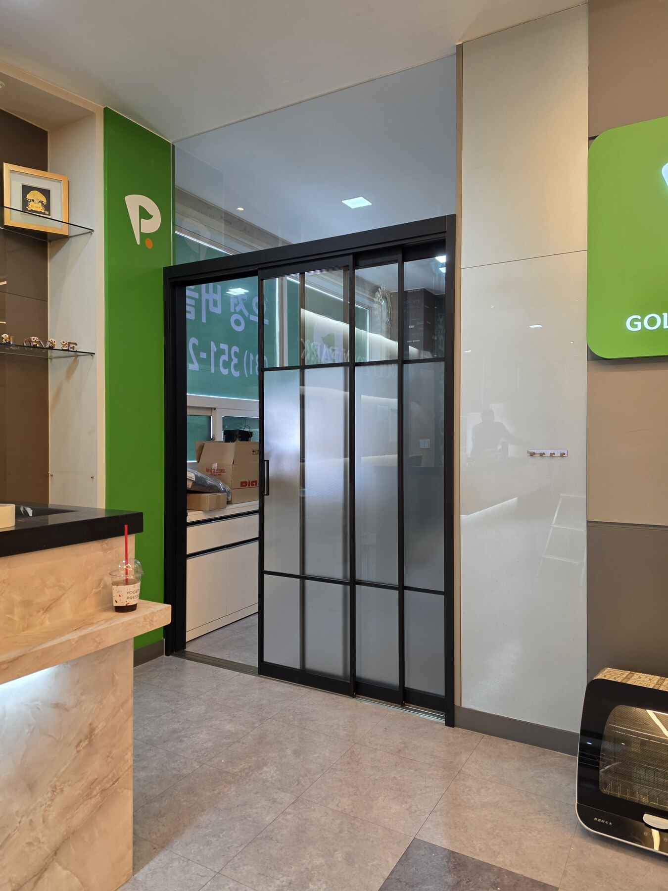
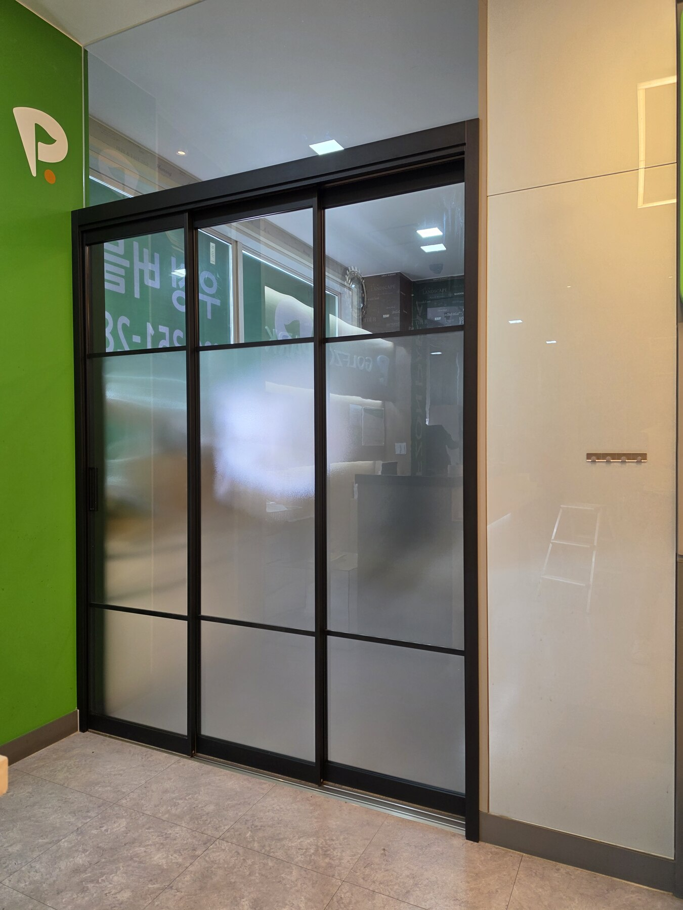
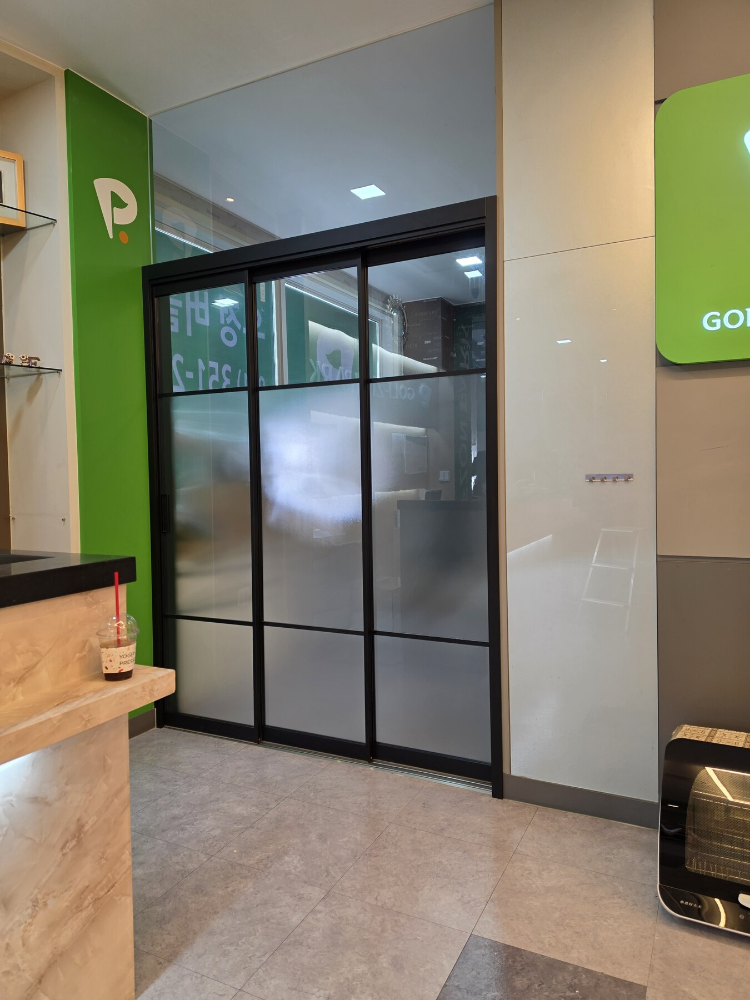
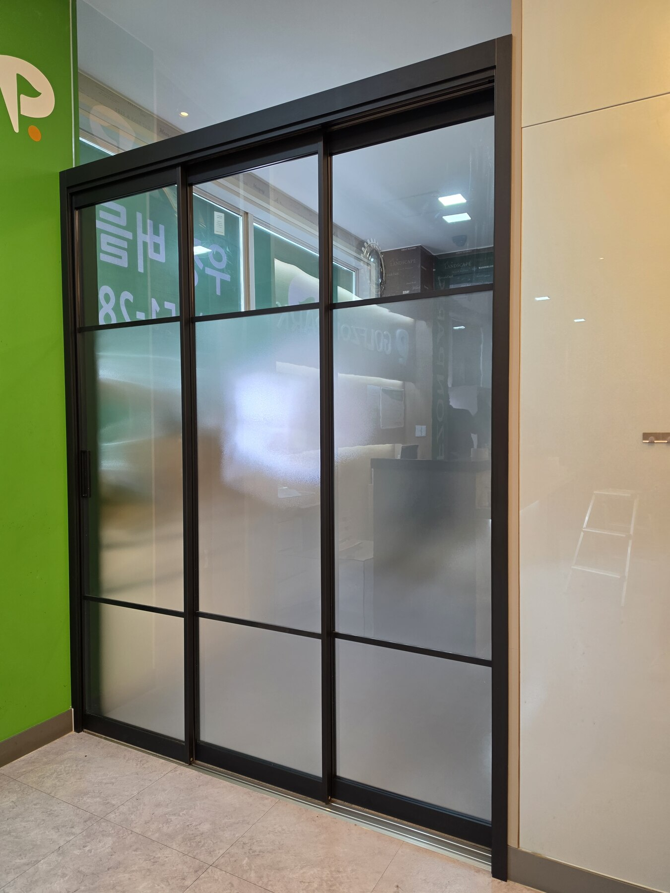
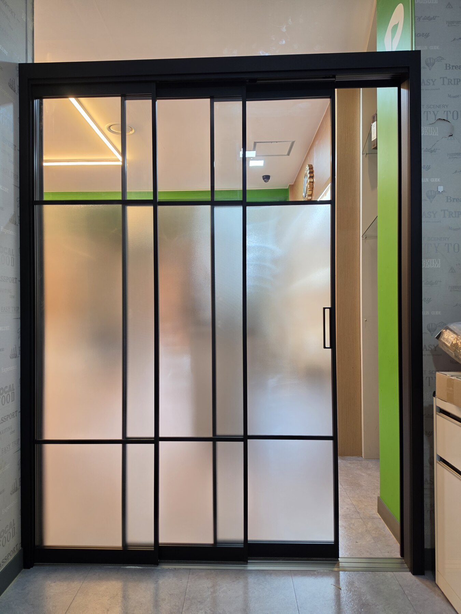
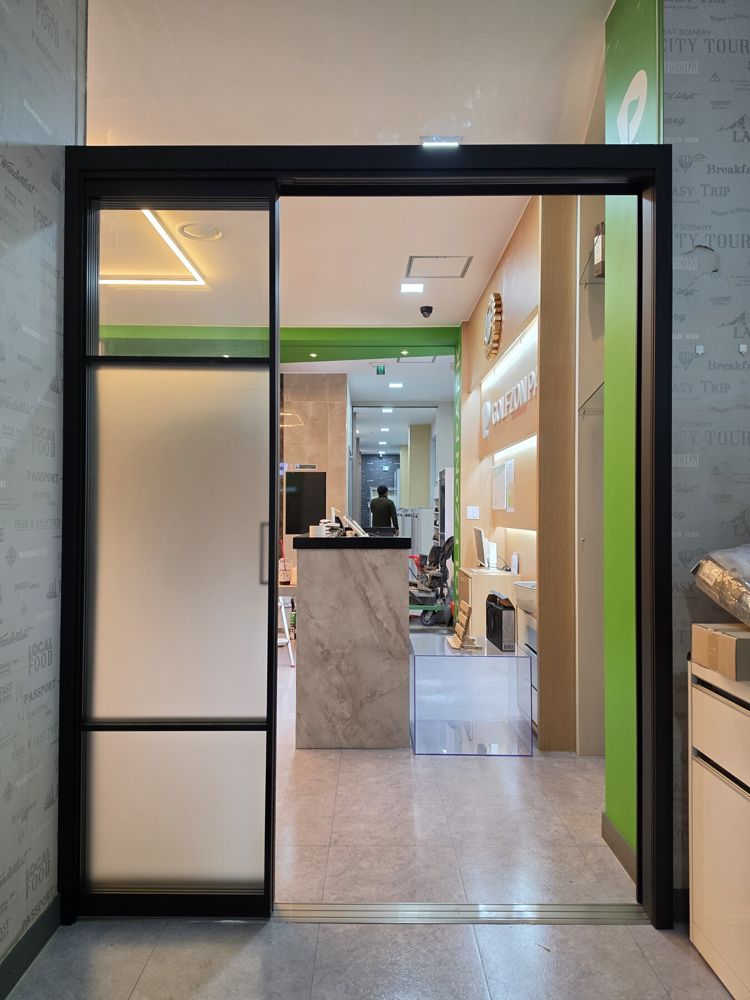

중동역 푸르지오 33평형 3연동 중문
이번 현장은 부천시 중동역 푸르지오 33평형 현관에 3연동 중문을 시공한 사례입니다. 3연동은 세 장의 문짝이 연동되어 움직이는 방식으로, 현관의 폭과 출입 동선을 고려해 설치 구성을 정하는 것이 중요합니다.
유리는 한 종류로 통일하지 않고 강화 아쿠아유리와 투명 강화유리를 혼합했습니다. 패턴이 있는 아쿠아유리는 유리 면에 시각적인 변화를 주고, 투명유리는 반대편 시야가 열려 있어 서로 다른 느낌을 한 중문 안에서 구성할 수 있습니다.
문다라는 같은 33평형이라도 현관 폭, 벽체와 신발장 위치, 실제 출입 동선을 확인해 현장에 맞는 중문 형태를 상담하고 제작·시공합니다.
시공 사진









부천 중동역 푸르지오 현관중문 묻고 답하기
어떤 중문을 시공했나요?
33평형 현관에 3연동 중문을 시공했으며 강화 아쿠아유리와 투명 강화유리를 혼합해 구성했습니다.
3연동 중문은 어떤 방식인가요?
세 장의 문짝이 연동되어 움직이는 미닫이 방식입니다. 실제 적용은 현관 구조와 출입 동선을 확인해 결정합니다.
아쿠아유리와 투명 강화유리를 함께 사용할 수 있나요?
네. 이번 현장처럼 서로 다른 유리를 혼합해 중문을 구성할 수 있습니다.
두 유리는 어떤 차이가 있나요?
아쿠아유리는 패턴이 디자인 요소가 되고, 투명유리는 시야가 트여 보다 개방적인 느낌을 줍니다.
기존 아파트에도 3연동 중문 설치가 가능한가요?
현관 폭과 벽체, 신발장 위치 등 현장 조건을 확인한 뒤 적합한 구성을 상담합니다.